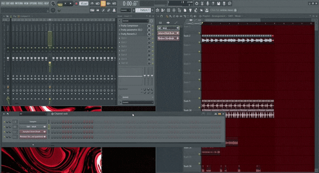

Verzia prvá o fl studio je: "Fruity Loops 1.0. 0" bola vydatá v roku 1997-1998, to bolo fl studio versia 10.
A potom je tu "Producer Verzia" ktoru používame To je fl studio versia 20-21 vydané v roku 2022-2023.
Normalna edícia je: "Digital Edition", táto edícia je celo zdarma lenže..
Potom tu je versia z názvom: "PREMIUM" ked chcete skusit že či sa vám bude páčit tak je tu 30-dnova skuska.
1. Možeťe si stiahnut pluginy, pretože v normalnej nemožeťe.
2. V pluginu "FLEX" sa nam pár možnosti odomklo.
